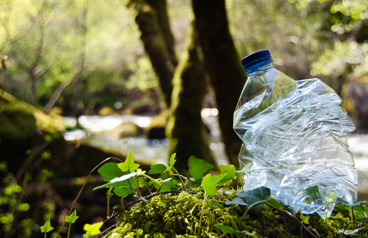
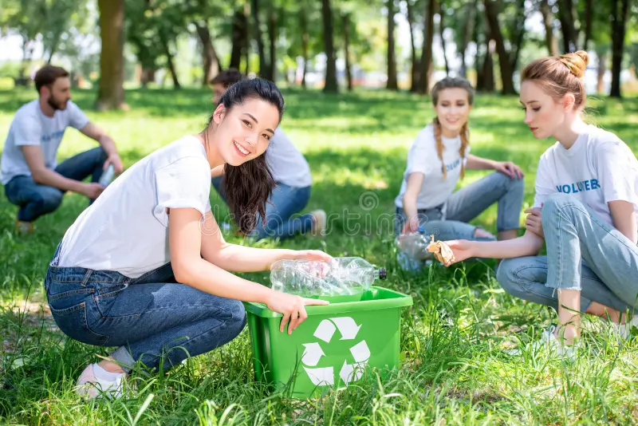
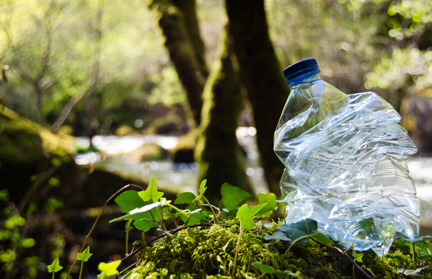
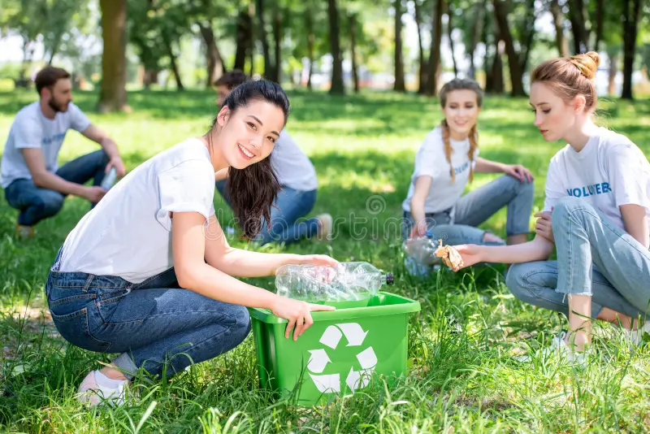

Zašto Reciklirati?
Reciklaža plastike je ključna za smanjenje zagađenja. Plastika može trajati stotinama godina ako se ne reciklira pravilno.
Statistika Reciklaže
| Godina | Postotak Recikliranog Otpada |
|---|---|
| 2020 | 25% |
| 2021 | 30% |
| 2022 | 35% |
Reciklaža plastike je ključan korak u očuvanju okoliša i smanjenju količine otpada koji završava na odlagalištima. Kroz edukaciju i svijest, svatko od nas može napraviti razliku. Na ovoj stranici saznajte više o pravilnoj reciklaži i načinima na koje možete pomoći.
Zajedno možemo smanjiti otpad i pomoći okolišu.
 



Reciklaža plastike je ključna za smanjenje zagađenja. Plastika može trajati stotinama godina ako se ne reciklira pravilno.
| Godina | Postotak Recikliranog Otpada |
|---|---|
| 2020 | 25% |
| 2021 | 30% |
| 2022 | 35% |